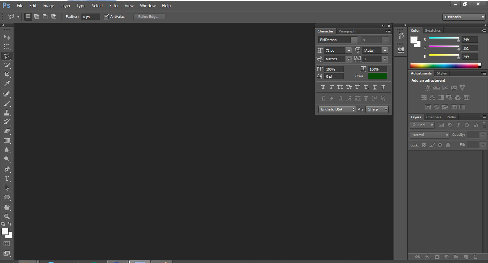
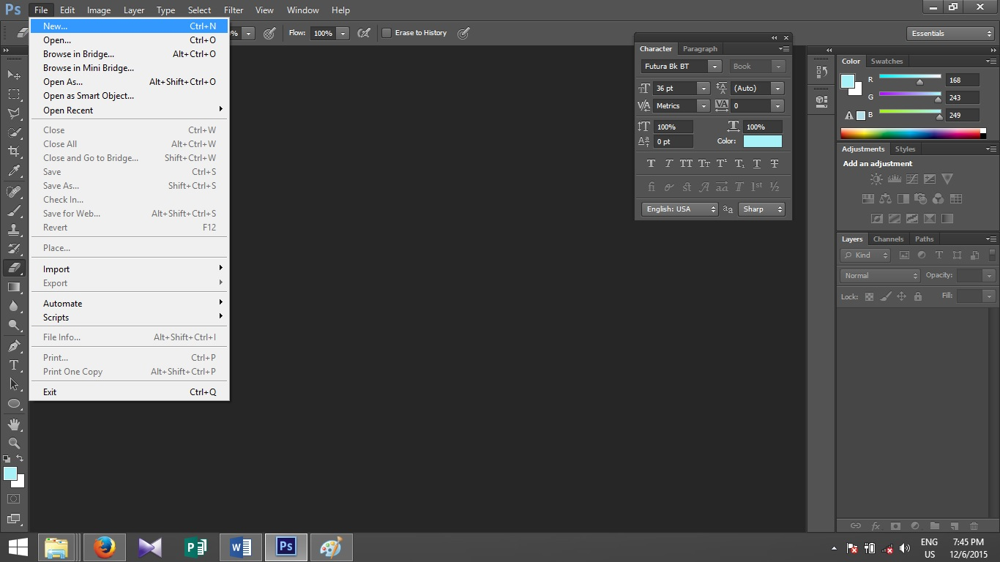

First tutorial Home
Hi everyone.Welcome to the first tutorial of Photoshop.
Here we are going to offer you a tutorial which describes Photoshop simply.And also we are teaching here Photoshop CS6.
Because lots of people are using it these days. This version is little bit different from other versions but if you are familiar with another version, it's okay. It's not that difficult to understand this version.
First of all I'd like to talk about what Photoshop is.
It's difficult to describe shortly what Photoshop is.Do you want to
You can use Photoshop for any of them. If you want to create book marks, stickers, a cover for a book, change the color of one of your beautiful photos, eliminate something you don't want in your photo you should use Photoshop. And also you can do very complex adjustments using Photoshop.
You who use Photoshop, First click the icon of Photoshop.
After you opened Photoshop, you would see an empty window as below mentioned.
The parts of that window are given below.
When you create a new file, you have to click 'File' in menu bar. As a shortcut you can use Alt+F. Then you will be able to see File menu. Then click 'New' in the File menu as below mentioned.
As a shortcut use Ctrl+N to get a new file.
After you clicked 'New', you would see the below mentioned dialog box.
Here under 'Name' give the file any name you like. In the above mentioned dialog box, Width, Height and Resolution are given in Pixels. But there are many units.
Eg : Inches, Centimeters & etc.
You can change it as below.
Here we can change more in this dialog box. But we will talk about it in a later tutorial.
After doing those changes, click 'OK'.
Then you will get the file as below.
Now you have the ability to create a new file.
In the next chapter we will talk about 'Tools' and their tasks in Photoshop.
See you!